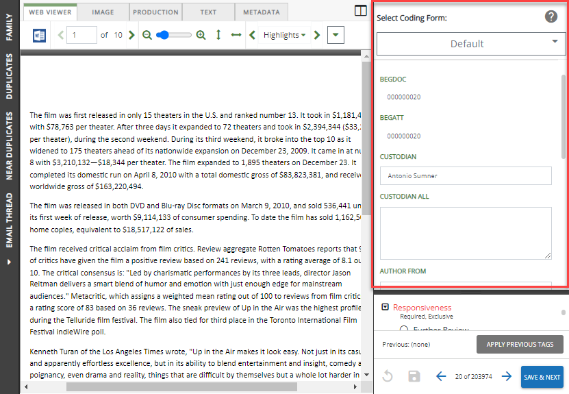

Coding Forms consist of various field sets that are listed on the Record View pane, within the document viewer.

Coding Forms can be created or modified to meet case users’ needs and allow them to work as efficiently as possible. Coding forms also dictate which tags appear in their case when reviewing documents and can be defined for specific user groups.
For a quick overview on how to create a coding form, see the video below: